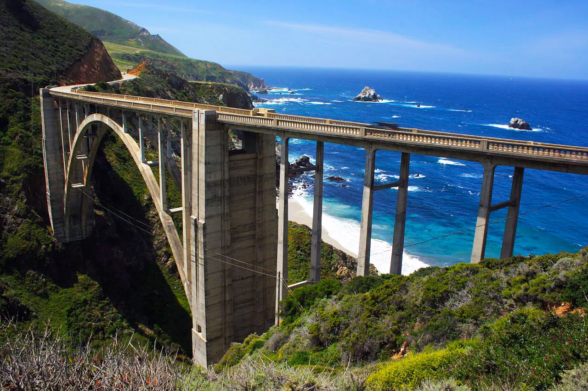
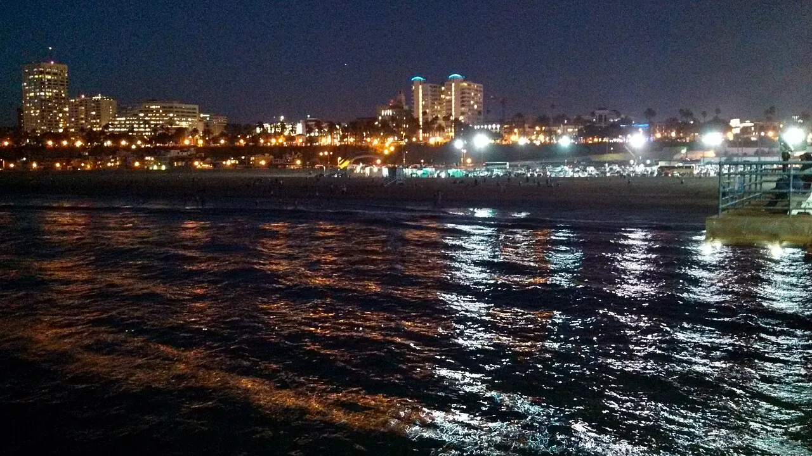

The plan at a glance
This is Vishanth’s personal, detailed version of the trip. It complements the shared itinerary; where bookings, flight times, or live road conditions differ, the confirmed group booking and same-day official alert should win.
The source plan’s 2026 watchlist
These claims shape the schedule but must be verified against the linked official sources before departure.
Big Sur traffic control
The pasted plan says Highway 1 is fully open, with 24/7 one-way control at Rocky Creek Bridge through 6 AM Aug 31 and possible delays up to 15 minutes. Check Caltrans QuickMap that morning.
McWay Falls access
The source plan expects the overlook trail to remain closed for retaining-wall work into 2026. Use only the legal viewing area shown by California State Parks.
Monterey Car Week
The trip overlaps Aug 7–16, 2026. That is why the plan sleeps in Salinas and clears the Monterey/Carmel area early on Day 5. Verify the event calendar.
Fern Canyon capacity
The pasted plan reports 35 morning, 35 afternoon, and 20 all-day permits daily during the May 15–Sep 15 reservation season. Confirm the current release rules with Redwood Parks Conservancy.
The full route
Use the shared interactive map for the geographic overview; each day below has a focused directions link.
If the embedded map does not load, open the full route map or use the per-day Google Maps links below.
The extended day-by-day plan
Open a day for the full timeline, stops, practical notes, and optional cuts.
1Seattle → Cannon Beach / Seaside
Sat Aug 8 · downtown without a car, then ~185 miles to the coast

Airport-to-market takes roughly an hour each way, leaving about 2–2.5 useful downtown hours. Be walking back toward Westlake around 4 PM so the 5 PM rental pickup is not compromised.
- 12:27
Land at SEA and take Link downtown
Allow time for bags, then ride to Westlake Station for roughly $3. The market is a ten-minute downhill walk.
- 1:45–4
Pike Place Market
See the Public Market Center sign, flying fish, MarketFront views, the original Starbucks storefront, and Gum Wall. Keep the visit moving.
- Quick eats: Pike Place Chowder, Beecher’s mac and cheese (~$6–10), Daily Dozen Doughnuts, or DeLaurenti picnic food.
- Sit-down if time allows: Lowell’s or The Pink Door.
- 4–5
Return to SEA for Hertz
Collect the car, confirm the under-25 surcharge and rental toll policy, and list every approved driver who will rotate behind the wheel.
- 5–9
Drive to the Oregon coast
Take I-5 south and US-26 west. This is the trip’s unavoidable interstate/dusk stretch, so skip scenic detours and eat on arrival.
Only if ahead: Haystack Rock around the ~8:30 PM sunset. Do not force it; Day 2 returns in daylight. - Night 1
Sleep in Cannon Beach or Seaside
Cannon Beach is prettier and walkable; Seaside usually has cheaper motel inventory.
2The Oregon Coast
Sun Aug 9 · Cannon Beach → Bandon / Coos Bay · ~230 miles

You have roughly 230 miles plus five or six worthwhile stops. Fuel before leaving the north coast, then top off around Newport and Florence.
- 8–9
Ecola State Park · source estimate $10/vehicle
Drive to Ecola Point for the Goonies/Point Break/Twilight overlook, Haystack Rock, Crescent Beach, and the Tillamook Rock Lighthouse view. The narrow road and small lots favor an early arrival.
- 9:15–10
Cannon Beach and Haystack Rock
Park near Hemlock and Gower. Visit tide pools only when tides safely permit; August is normally too late for nesting puffins.
- 10:15–11:15
Hug Point + Neahkahnie Viewpoint
Hug Point’s caves, waterfall, and carved stagecoach route require a safe lower tide. Neahkahnie is the quick, high-payoff roadside panorama.
- Noon–1:30
- 3:30–4:30
Cape Perpetua, Thor’s Well, and Cook’s Chasm · source estimate $5
Walk the Captain Cook Trail to Thor’s Well, Spouting Horn, and Cook’s Chasm. Aim for roughly one hour before through one hour after high tide—but stay on safe surfaces and away from wave-washed basalt.
- 4:45–5:15
Heceta Head Lighthouse
Use the roadside viewpoint or walk the half-mile trail if time and operating hours cooperate.
- Optional
Sea Lion Caves or Sand Master Park · source estimates ~$16 each
The sea-cave elevator is a short weatherproof stop; sandboarding is more active but needs one to two hours. Realistically choose at most one.
- 7:30–8
Bandon / Coos Bay
If daylight remains, go directly to Face Rock for the day’s best sea-stack sunset. Sunday hours make Tony’s Crab Shack unreliable; check current options before depending on it.
3Samuel Boardman + the Redwoods
Mon Aug 10 · Bandon → Garberville · ~250 miles

Fern Canyon is magical but costs 1.5–2 hours of narrow dirt-road access. Attempt it only with a confirmed permit and enough schedule margin by mid-afternoon.
- 7:30
Leave Bandon with fuel
Fuel can be sparse. Fill here, then again in Brookings or Crescent City.
- 9:30–12
Samuel H. Boardman corridor
Drive the 12-mile corridor north to south. Prioritize Natural Bridges, Thunder Rock Cove/Secret Beach, and Arch Rock; add Thomas Creek Bridge or Whaleshead only with extra time.
- Natural Bridges: short platform walk over the sea arches.
- Secret Beach: use Thunder Rock Cove’s clearer trail; best at lower tide.
- Arch Rock: paved loop, restrooms, picnic tables.
- 12:15–1
Lunch in Brookings
Brookings is the last easy Oregon food stop before the California border. The shared food plan uses Khun Thai takeout; Trees of Mystery’s Forest Café is a practical later fallback near Klamath.
- ~2
- 2:45–4
Newton B. Drury Scenic Parkway
Use the ten-mile redwood parkway without backtracking. Stop at Big Tree Wayside and Elk Prairie; Circle, Cathedral Trees, or Foothill trails are short additions.
- If booked
Fern Canyon / Gold Bluffs Beach · source budget $12 cash/check
A reservation is required May 15–Sep 15, plus the stated day-use fee. The pasted plan budgets $12; the current NPS basic-information page lists $8, so verify and carry extra cash. Davison Road is eight miles of narrow dirt road with stream crossings; the source plan lists an 8-foot width and 24-foot length limit with no trailers. Skip if behind; the core redwood experience survives.
- 5:30+
Avenue of the Giants taste → Garberville
Enter near Pepperwood if daylight allows. Save the fuller drive for Day 4 morning when needed; Shrine Drive-Thru Tree is daytime-only and the pasted plan estimates $15/car.
4Redwoods → Golden Gate → Otter Kayak
Tue Aug 11 · Garberville → Salinas · ~300 miles

US-101 is the only reasonable route with the kayak deadline. Highway 1 through Mendocino is beautiful but belongs on a separate trip.
- 7–8:30
Avenue of the Giants / Founders Grove
Use the morning light for Founders Grove’s easy half-mile loop and the Dyerville Giant. Add Shrine Drive-Thru Tree or Rockefeller Loop only if yesterday’s schedule left room.
- 8:30–1
Efficient US-101 miles
Grab breakfast in Garberville. Willits, Ukiah, Cloverdale, and Healdsburg are practical breaks, but a sit-down lunch can threaten the tour.
- ~1–1:45
Battery Spencer
Exit before crossing the Golden Gate for the classic elevated bridge-and-skyline view. Parking is tight. The bridge toll is cashless and may be billed through the rental company.
- Afternoon
Elkhorn Slough kayak—the pivot point · source estimate $50–75+
A morning tour is impossible from Garberville. Book an afternoon or sunset beginner-friendly tour out of Moss Landing, arrive early for parking (source estimate ~$10–11), and bring layers, quick-dry clothing, and a waterproof phone case.
- Monterey Bay Kayaks and Kayak Connection offer guided options.
- Expect sea otters and harbor seals, not a guaranteed wildlife performance.
- If the paddle timing fails, investigate the Elkhorn Slough Safari pontoon cruise.
- Night 4
Salinas—not Monterey
Drive 30–40 minutes inland. Monterey Car Week overlaps the trip, making Salinas the practical sleep and fuel stop before Big Sur.
5The Big Sur Signature Drive
Wed Aug 12 · Salinas → Pismo Beach · ~250 miles

Highway 1 construction and closures can change. Check QuickMap that morning, allow at least 15 minutes for active one-way control, and treat any confirmed closure as more authoritative than this plan.
- 8–9:45
Point Lobos at opening · source estimate $10/vehicle
Arrive when the reserve opens because parking is tightly capped at roughly 150 vehicles. Combine Cypress Grove and Sea Lion Point; add Bird Island/China Cove only if pace allows. No swimming.
- 10–11
Garrapata + Bixby Creek Bridge
Use Garrapata’s roadside headland pullouts for a short leg stretch, then cap Bixby at 15–20 minutes. Expect congestion around the bridge.
- 11:30–12:45
Pfeiffer Beach · source estimate $12 cash
Turn onto narrow Sycamore Canyon Road near Big Sur Station. The lot is small; bring cash and expect wind, rip currents, purple sand, and Keyhole Arch—not swimming.
- 1–2
Nepenthe lunch
The terrace view is the point; waits and prices can be high. Café Kevah or packed Salinas burritos are the faster backups.
- 2:15–4:30
McWay Falls → Sand Dollar → Ragged Point
Use the legal roadside/park viewing area available at McWay if the overlook trail remains closed. Sand Dollar and Jade Cove are optional leg stretches. Ragged Point provides restrooms, food, and fuel.
- ~4:45
Piedras Blancas elephant seals
The free boardwalk is easy and worthwhile, but August normally has the year’s smallest crowd of seals—often mostly large adult males after molt.
- 6–7:30
Morro Bay → Pismo Beach
Use Morro Rock as an optional waterfront break, then finish with sunset on Pismo Pier or the Shell Beach bluffs. Splash Café, Cracked Crab, and Ventana Grill are dinner ideas; Old West Cinnamon Rolls can cover the early departure. Skip the Monarch Butterfly Grove—it is a November–February attraction.
6Malibu Surf → Santa Monica → LAX
Thu Aug 13 · Pismo Beach → Los Angeles · ~180 miles

The pasted plan’s full Griffith sunset only works with a sufficiently late confirmed flight. Work backward from the required rental return and airside buffer; Santa Monica is the default finale if the flight is earlier.
- 7:30–10:30
Pismo to Malibu
Take coffee and cinnamon rolls to go. Santa Barbara is a bonus only if the surf lesson arrival is already protected.
- 11–1
Beginner surf lesson · source estimate ~$90/person
Book a wetsuit-and-soft-top lesson. Sunset Point/Zuma generally offers sandy beginner conditions; Surfrider has iconic longboard waves but can be crowded and rocky. The school may relocate for conditions.
- 1:15–2
Malibu lunch
Use Malibu Seafood from the shared group food plan or Malibu Farm Café if the schedule and budget allow.
- Optional
El Matador + Point Dume · El Matador source estimate $8
El Matador has photogenic caves and arches but limited parking and steep stairs. Point Dume is a short bluff-view option. Both should be cut before risking Santa Monica or LAX.
- 3:45–5:30
Santa Monica swim and pier
Use a lifeguarded area for the relaxed beach-town finale. Swim, rinse off, see the pier and Pacific Park, and monitor traffic before leaving.
- Conditional
Griffith Observatory sunset · admission free
Excellent city/Hollywood Sign views, but sunset parking is slow; the source plan estimates $4–10/hour for nearby paid parking and $0.50 for DASH. Use the shuttle or shorten the visit. If the flight timing is not unquestionably safe, skip Griffith.
- Final
Rental return and LAX
Refuel near the airport, return the Hertz car, and be airside roughly three hours before the confirmed departure. Do not use an aspirational flight time to schedule the day.
Reservations, cash, and trip triggers
The details most likely to change what fits.
Reserve and confirm
- Fern Canyon / Gold Bluffs permit and current fee
- Afternoon or sunset Elkhorn Slough tour
- Malibu or Santa Monica beginner surf lesson
- All five overnight rooms
- Actual Aug 13 LAX flight and fare rules
- Every approved driver on the Hertz contract
Carry and check
- At least ~$50 cash for park access and parking
- Fuel before Oregon’s sparse stretches and before Big Sur
- Caltrans QuickMap on Day 5
- Tide forecast for Hug Point, Thor’s Well, Secret Beach, and tide pools
- Layers, quick-dry clothes, and waterproof phone protection
- Rental toll and refueling policies
Cut first when late
- Day 2: Sea Lion Caves and Sand Master Park.
- Day 3: Fern Canyon—the largest time sink.
- Day 4: Sausalito and any sit-down lunch.
- Day 5: Sand Dollar/Jade Cove and Morro Bay.
- Day 6: Point Dume, El Matador, then Griffith.
Conditions that override the plan
- Official closure, fire, surf, tide, or weather warnings.
- A tour operator moving or canceling the kayak/surf session.
- Monterey Car Week traffic around Carmel and Big Sur.
- Fog obscuring a viewpoint—do not wait indefinitely.
- The confirmed LAX departure and required airport buffer.
Recheck before travel: road work, trail access, permits, prices, hours, tides, wildlife patterns, and restaurant schedules can change. This page organizes Vishanth’s source plan; it is not a live conditions service.
Photo credits
Locally optimized copies of freely licensed Wikimedia Commons images.
- Pike Place Market, Visitor7, CC BY-SA 3.0; resized and converted to WebP.
- Haystack Rock and Cannon Beach from Ecola State Park, Joe Mabel, CC BY-SA 4.0.
- Samuel H. Boardman State Scenic Corridor, Dougtone, CC BY-SA 2.0; resized and converted to WebP.
- Golden Gate Bridge from Battery Spencer, Christoph Strässler, CC BY-SA 2.0.
- Bixby Creek Bridge, Ian McWilliams, CC BY 2.0.
- Santa Monica from the pier, Northwalker, CC0.
{kind=link}
{kind=link}
{kind=link}
{kind=link}
{kind=link}
{kind=link}